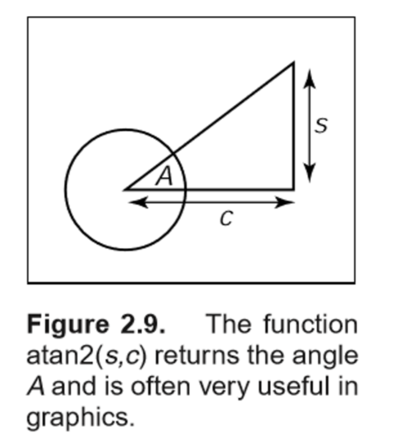

<!DOCTYPE html>
<html>
<head><meta name="generator" content="Hexo 3.8.0">
  <!-- hexo-inject:begin --><!-- hexo-inject:end --><meta charset="utf-8">
  
  <title>grahpics-note01 | YGlacier的没技术博客</title>
  <meta name="viewport" content="width=device-width, initial-scale=1, maximum-scale=1">
  <meta name="description" content="Fundamentals of Computer Graphics 读书笔记 01基础数学第二章里的基础数学还蛮简单的，这里就只列举之前不知道的知识。 atan2函数  如图所示，atan2(s,c)会返回角度A。换句话说，$$atan2(s,c) = atan(s/c)$$ C++中的atan2函数需要#include&amp;lt;cmath&amp;gt;，函数返回的角度单位为$rad$，值域为$[-\pi,\p">
<meta name="keywords" content="CG,Vulkan,OpenGL">
<meta property="og:type" content="article">
<meta property="og:title" content="grahpics-note01">
<meta property="og:url" content="https://yglacier.github.io/YGlacierBlog/2019/05/09/grahpics-note01/index.html">
<meta property="og:site_name" content="YGlacier的没技术博客">
<meta property="og:description" content="Fundamentals of Computer Graphics 读书笔记 01基础数学第二章里的基础数学还蛮简单的，这里就只列举之前不知道的知识。 atan2函数  如图所示，atan2(s,c)会返回角度A。换句话说，$$atan2(s,c) = atan(s/c)$$ C++中的atan2函数需要#include&amp;lt;cmath&amp;gt;，函数返回的角度单位为$rad$，值域为$[-\pi,\p">
<meta property="og:locale" content="zh">
<meta property="og:image" content="https://yglacier.github.io/YGlacierBlog/2019/05/09/grahpics-note01/img/atan2.png">
<meta property="og:updated_time" content="2019-05-09T09:06:53.194Z">
<meta name="twitter:card" content="summary">
<meta name="twitter:title" content="grahpics-note01">
<meta name="twitter:description" content="Fundamentals of Computer Graphics 读书笔记 01基础数学第二章里的基础数学还蛮简单的，这里就只列举之前不知道的知识。 atan2函数  如图所示，atan2(s,c)会返回角度A。换句话说，$$atan2(s,c) = atan(s/c)$$ C++中的atan2函数需要#include&amp;lt;cmath&amp;gt;，函数返回的角度单位为$rad$，值域为$[-\pi,\p">
<meta name="twitter:image" content="https://yglacier.github.io/YGlacierBlog/2019/05/09/grahpics-note01/img/atan2.png">
  
    <link rel="alternative" href="/atom.xml" title="YGlacier的没技术博客" type="application/atom+xml">
  
  
    <link rel="icon" href="/YGlacierBlog/img/icon.jpg">
  
  
      <link rel="stylesheet" href="//cdn.bootcss.com/animate.css/3.5.0/animate.min.css">
  
  <link rel="stylesheet" href="/YGlacierBlog/css/style.css">
  <link rel="stylesheet" href="/YGlacierBlog/font-awesome/css/font-awesome.min.css">
  <link rel="apple-touch-icon" href="/YGlacierBlog/apple-touch-icon.png">
  
  
      <link rel="stylesheet" href="/YGlacierBlog/fancybox/jquery.fancybox.css">
  
  <!-- 加载特效 -->
    <script src="/YGlacierBlog/js/pace.js"></script>
    <link href="/YGlacierBlog/css/pace/pace-theme-flash.css" rel="stylesheet">
  <script>
      var yiliaConfig = {
          rootUrl: '/YGlacierBlog/',
          fancybox: true,
          animate: true,
          isHome: false,
          isPost: true,
          isArchive: false,
          isTag: false,
          isCategory: false,
          open_in_new: false
      }
  </script><!-- hexo-inject:begin --><!-- hexo-inject:end -->
</head></html>
<body>
  <!-- hexo-inject:begin --><!-- hexo-inject:end --><div id="container">
    <div class="left-col">
    <div class="overlay"></div>
<div class="intrude-less">
    <header id="header" class="inner">
        <a href="/YGlacierBlog/" class="profilepic">
            
            
            
        </a>

        <hgroup>
          <h1 class="header-author"><a href="/YGlacierBlog/" title="Hi Mate">Glacier Yu</a></h1>
        </hgroup>

        
        
        
            <div id="switch-btn" class="switch-btn">
                <div class="icon">
                    <div class="icon-ctn">
                        <div class="icon-wrap icon-house" data-idx="0">
                            <div class="birdhouse"></div>
                            <div class="birdhouse_holes"></div>
                        </div>
                        <div class="icon-wrap icon-ribbon hide" data-idx="1">
                            <div class="ribbon"></div>
                        </div>
                        
                        <div class="icon-wrap icon-link hide" data-idx="2">
                            <div class="loopback_l"></div>
                            <div class="loopback_r"></div>
                        </div>
                        
                        
                        <div class="icon-wrap icon-me hide" data-idx="3">
                            <div class="user"></div>
                            <div class="shoulder"></div>
                        </div>
                        
                    </div>
                    
                </div>
                <div class="tips-box hide">
                    <div class="tips-arrow"></div>
                    <ul class="tips-inner">
                        <li>菜单</li>
                        <li>标签</li>
                        
                        <li>友情链接</li>
                        
                        
                        <li>关于我</li>
                        
                    </ul>
                </div>
            </div>
        

        <div id="switch-area" class="switch-area">
            <div class="switch-wrap">
                <section class="switch-part switch-part1">
                    <nav class="header-menu">
                        <ul>
                        
                            <li><a href="/YGlacierBlog/">博客首页</a></li>
                        
                        </ul>
                    </nav>
                    <nav class="header-nav">
                        <ul class="social">
                            
                                <a class="fl github" target="_blank" href="https://github.com/YGlacier" title="github">github</a>
                            
                                <a class="fl weibo" target="_blank" href="http://weibo.com/YGlacier" title="weibo">weibo</a>
                            
                        </ul>
                    </nav>
                </section>
                
                
                <section class="switch-part switch-part2">
                    <div class="widget tagcloud" id="js-tagcloud">
                        <a href="/YGlacierBlog/tags/cg/" style="font-size: 10px;">CG</a> <a href="/YGlacierBlog/tags/opengl/" style="font-size: 10px;">OpenGL</a> <a href="/YGlacierBlog/tags/vulkan/" style="font-size: 10px;">Vulkan</a> <a href="/YGlacierBlog/tags/chat/" style="font-size: 10px;">雑談</a>
                    </div>
                </section>
                
                
                
                <section class="switch-part switch-part3">
                    <div id="js-friends">
                    
                      <a target="_blank" class="main-nav-link switch-friends-link" href="https://YGlacier.github.io/YGlacierBlog">Myself</a>
                    
                    </div>
                </section>
                

                
                
                <section class="switch-part switch-part4">
                
                    <div id="js-aboutme">纯海迷、爱运动、爱交友、爱旅行、喜欢接触新鲜事物、迎接新的挑战，更爱游离于错综复杂的编码与逻辑中</div>
                </section>
                
            </div>
        </div>
    </header>                
</div>
    </div>
    <div class="mid-col">
      <nav id="mobile-nav">
      <div class="overlay">
          <div class="slider-trigger"></div>
          <h1 class="header-author js-mobile-header hide"><a href="/YGlacierBlog/" title="Me">Glacier Yu</a></h1>
      </div>
    <div class="intrude-less">
        <header id="header" class="inner">
            <a href="/YGlacierBlog/" class="profilepic">
                
                    
                
            </a>
            <hgroup>
              <h1 class="header-author"><a href="/YGlacierBlog/" title="Me">Glacier Yu</a></h1>
            </hgroup>
            
            <nav class="header-menu">
                <ul>
                
                    <li><a href="/YGlacierBlog/">博客首页</a></li>
                
                <div class="clearfix"></div>
                </ul>
            </nav>
            <nav class="header-nav">
                <div class="social">
                    
                        <a class="github" target="_blank" href="https://github.com/YGlacier" title="github">github</a>
                    
                        <a class="weibo" target="_blank" href="http://weibo.com/YGlacier" title="weibo">weibo</a>
                    
                </div>
            </nav>
        </header>                
    </div>
</nav>
      <div class="body-wrap"><article id="post-grahpics-note01" class="article article-type-post" itemscope="" itemprop="blogPost">
  
    <div class="article-meta">
      <a href="/YGlacierBlog/2019/05/09/grahpics-note01/" class="article-date">
      <time datetime="2019-05-09T05:11:53.000Z" itemprop="datePublished">2019-05-09</time>
</a>
    </div>
  
  <div class="article-inner">
    
      <input type="hidden" class="isFancy">
    
    
      <header class="article-header">
        
  
    <h1 class="article-title" itemprop="name">
      grahpics-note01
    </h1>
  

      </header>
      
      <div class="article-info article-info-post">
        
    <div class="article-category tagcloud">
    <a class="article-category-link" href="/YGlacierBlog/categories/cg/">CG</a>
    </div>


        
    <div class="article-tag tagcloud">
        <ul class="article-tag-list"><li class="article-tag-list-item"><a class="article-tag-list-link" href="/YGlacierBlog/tags/cg/">CG</a></li><li class="article-tag-list-item"><a class="article-tag-list-link" href="/YGlacierBlog/tags/opengl/">OpenGL</a></li><li class="article-tag-list-item"><a class="article-tag-list-link" href="/YGlacierBlog/tags/vulkan/">Vulkan</a></li></ul>
    </div>

        <div class="clearfix"></div>
      </div>
      
    
    <div class="article-entry" itemprop="articleBody">
      
          
        <h1 id="Fundamentals-of-Computer-Graphics-读书笔记-01"><a href="#Fundamentals-of-Computer-Graphics-读书笔记-01" class="headerlink" title="Fundamentals of Computer Graphics 读书笔记 01"></a>Fundamentals of Computer Graphics 读书笔记 01</h1><h2 id="基础数学"><a href="#基础数学" class="headerlink" title="基础数学"></a>基础数学</h2><p>第二章里的基础数学还蛮简单的，这里就只列举之前不知道的知识。</p>
<h3 id="atan2函数"><a href="#atan2函数" class="headerlink" title="atan2函数"></a>atan2函数</h3><p></p>
<!--

-->
<p>如图所示，atan2(s,c)会返回角度A。<br>换句话说，<br>$$<br>atan2(s,c) = atan(s/c)<br>$$</p>
<p>C++中的atan2函数需要#include&lt;cmath>，函数返回的角度单位为$rad$，值域为$[-\pi,\pi]$。</p>

      
      
    </div>
    
  </div>
  
    
    <div class="copyright">
        <p><span>本文标题:</span><a href="/YGlacierBlog/2019/05/09/grahpics-note01/">grahpics-note01</a></p>
        <p><span>文章作者:</span><a href="/YGlacierBlog/" title="访问 Glacier Yu 的个人博客">Glacier Yu</a></p>
        <p><span>发布时间:</span>2019年05月09日 - 14时11分</p>
        <p><span>最后更新:</span>2019年05月09日 - 18时06分</p>
        <p>
            <span>原始链接:</span><a class="post-url" href="/YGlacierBlog/2019/05/09/grahpics-note01/" title="grahpics-note01">https://yglacier.github.io/YGlacierBlog/2019/05/09/grahpics-note01/</a>
            <span class="copy-path" data-clipboard-text="原文: https://yglacier.github.io/YGlacierBlog/2019/05/09/grahpics-note01/　　作者: Glacier Yu" title="点击复制文章链接"><i class="fa fa-clipboard"></i></span>
            <script src="/YGlacierBlog/js/clipboard.min.js"></script>
            <script> var clipboard = new Clipboard('.copy-path'); </script>
        </p>
        <p>
            <span>许可协议:</span><i class="fa fa-creative-commons"></i> <a rel="license" href="http://creativecommons.org/licenses/by-nc-sa/3.0/cn/" title="中国大陆 (CC BY-NC-SA 3.0 CN)" target="_blank">"署名-非商用-相同方式共享 3.0"</a> 转载请保留原文链接及作者。
        </p>
    </div>


<nav id="article-nav">
  
  
    <a href="/YGlacierBlog/2018/11/06/hello-world/" id="article-nav-older" class="article-nav-link-wrap">
      <div class="article-nav-title">Hello World</div>
      <strong class="article-nav-caption">></strong>
    </a>
  
</nav>

  
</article>

    <div id="toc" class="toc-article">
    <strong class="toc-title">文章目录</strong>
    <ol class="toc"><li class="toc-item toc-level-1"><a class="toc-link" href="#Fundamentals-of-Computer-Graphics-读书笔记-01"><span class="toc-number">1.</span> <span class="toc-text">Fundamentals of Computer Graphics 读书笔记 01</span></a><ol class="toc-child"><li class="toc-item toc-level-2"><a class="toc-link" href="#基础数学"><span class="toc-number">1.1.</span> <span class="toc-text">基础数学</span></a><ol class="toc-child"><li class="toc-item toc-level-3"><a class="toc-link" href="#atan2函数"><span class="toc-number">1.1.1.</span> <span class="toc-text">atan2函数</span></a></li></ol></li></ol></li></ol>
</div>
<input type="button" id="tocButton" value="隐藏目录" title="点击按钮隐藏或者显示文章目录">

<script src="https://7.url.cn/edu/jslib/comb/require-2.1.6,jquery-1.9.1.min.js"></script>
<script>
    var valueHide = "隐藏目录";
    var valueShow = "显示目录";

    if ($(".left-col").is(":hidden")) {
        $("#tocButton").attr("value", valueShow);
    }
    $("#tocButton").click(function() {
        if ($("#toc").is(":hidden")) {
            $("#tocButton").attr("value", valueHide);
            $("#toc").slideDown(320);
        }
        else {
            $("#tocButton").attr("value", valueShow);
            $("#toc").slideUp(350);
        }
    })
    if ($(".toc").length < 1) {
        $("#toc, #tocButton").hide();
    }
</script>


<div class="bdsharebuttonbox">
	<a href="#" class="fx fa-weibo bds_tsina" data-cmd="tsina" title="分享到新浪微博"></a>
	<a href="#" class="fx fa-weixin bds_weixin" data-cmd="weixin" title="分享到微信"></a>
	<a href="#" class="fx fa-qq bds_sqq" data-cmd="sqq" title="分享到QQ好友"></a>
	<a href="#" class="fx fa-facebook-official bds_fbook" data-cmd="fbook" title="分享到Facebook"></a>
	<a href="#" class="fx fa-twitter bds_twi" data-cmd="twi" title="分享到Twitter"></a>
	<a href="#" class="fx fa-linkedin bds_linkedin" data-cmd="linkedin" title="分享到linkedin"></a>
	<a href="#" class="fx fa-files-o bds_copy" data-cmd="copy" title="分享到复制网址"></a>
</div>
<script>window._bd_share_config={"common":{"bdSnsKey":{},"bdText":"","bdMini":"2","bdMiniList":false,"bdPic":"","bdStyle":"2","bdSize":"24"},"share":{}};with(document)0[(getElementsByTagName('head')[0]||body).appendChild(createElement('script')).src='/YGlacierBlog/static/api/js/share.js?v=89860593.js?cdnversion='+~(-new Date()/36e5)];</script>


    
        <div id="gitments"></div>
<script src="/YGlacierBlog/js/gitment.browser.js"></script>
<script>
    var gitment = new Gitment({
      id: window.location.pathname,
      owner: 'YGlacier',
      repo: 'https://github.com/YGlacier/YGlacierBlogComments.git',
      oauth: {
        client_id: '',
        client_secret: '',
      },
    })
    gitment.render('gitments')
</script>
    


    <div class="scroll" id="post-nav-button">
        
            <a href="/YGlacierBlog/" title="回到主页"><i class="fa fa-home"></i></a>
        
        <a title="文章列表"><i class="fa fa-bars"></i><i class="fa fa-times"></i></a>
        
            <a href="/YGlacierBlog/2018/11/06/hello-world/" title="下一篇: Hello World">
                <i class="fa fa-angle-right"></i>
            </a>
        
    </div>
    <ul class="post-list"><li class="post-list-item"><a class="post-list-link" href="/YGlacierBlog/2019/05/09/grahpics-note01/">grahpics-note01</a></li><li class="post-list-item"><a class="post-list-link" href="/YGlacierBlog/2018/11/06/hello-world/">Hello World</a></li></ul>
    <script src="https://7.url.cn/edu/jslib/comb/require-2.1.6,jquery-1.9.1.min.js"></script>
    <script>
        $(".post-list").addClass("toc-article");
        $(".post-list-item a").attr("target","_blank");
        $("#post-nav-button > a:nth-child(2)").click(function() {
            $(".fa-bars, .fa-times").toggle();
            $(".post-list").toggle(300);
            if ($(".toc").length > 0) {
                $("#toc, #tocButton").toggle(200, function() {
                    if ($(".switch-area").is(":visible")) {
                        $("#tocButton").attr("value", valueHide);
                        }
                    })
            }
            else {
            }
        })
    </script>


    <script>
        
    </script>
</div>
      <footer id="footer">
    <div class="outer">
        <div id="footer-info">
            <div class="footer-left">
                &copy; 2019 Glacier Yu
            </div>
            <div class="footer-right">
                <a href="http://hexo.io/" target="_blank">Hexo</a>  Theme <a href="https://github.com/luuman/hexo-theme-spfk" target="_blank">spfk</a> by luuman
            </div>
        </div>
        
            <div class="visit">
                
                    <span id="busuanzi_container_site_pv" style="display:none">
                        <span id="site-visit">海贼到访数: 
                            <span id="busuanzi_value_site_uv"></span>
                        </span>
                    </span>
                
                
                    <span>, </span>
                
                
                    <span id="busuanzi_container_page_pv" style="display:none">
                        <span id="page-visit">本页阅读量: 
                            <span id="busuanzi_value_page_pv"></span>
                        </span>
                    </span>
                
            </div>
        
    </div>
</footer>

    </div>
    <script src="https://7.url.cn/edu/jslib/comb/require-2.1.6,jquery-1.9.1.min.js"></script>
<script src="/YGlacierBlog/js/main.js"></script>

    <script>
        $(document).ready(function() {
            var backgroundnum = 24;
            var backgroundimg = "url(/YGlacierBlog/background/bg-x.jpg)".replace(/x/gi, Math.ceil(Math.random() * backgroundnum));
            $("#mobile-nav").css({"background-image": backgroundimg,"background-size": "cover","background-position": "center"});
            $(".left-col").css({"background-image": backgroundimg,"background-size": "cover","background-position": "center"});
        })
    </script>


<script type="text/x-mathjax-config">
MathJax.Hub.Config({
    tex2jax: {
        inlineMath: [ ['$','$'], ["\\(","\\)"]  ],
        processEscapes: true,
        skipTags: ['script', 'noscript', 'style', 'textarea', 'pre', 'code']
    }
});

MathJax.Hub.Queue(function() {
    var all = MathJax.Hub.getAllJax(), i;
    for(i=0; i < all.length; i += 1) {
        all[i].SourceElement().parentNode.className += ' has-jax';                 
    }       
});
</script>

<script type="text/javascript" src="https://cdn.mathjax.org/mathjax/latest/MathJax.js?config=TeX-AMS-MML_HTMLorMML">
</script>


<div class="scroll" id="scroll">
    <a href="#"><i class="fa fa-arrow-up"></i></a>
    <a href="#comments"><i class="fa fa-comments-o"></i></a>
    <a href="#footer"><i class="fa fa-arrow-down"></i></a>
</div>
<script>
    $(document).ready(function() {
        if ($("#comments").length < 1) {
            $("#scroll > a:nth-child(2)").hide();
        };
    })
</script>

<script async src="https://dn-lbstatics.qbox.me/busuanzi/2.3/busuanzi.pure.mini.js">
</script>

  <script language="javascript">
    $(function() {
        $("a[title]").each(function() {
            var a = $(this);
            var title = a.attr('title');
            if (title == undefined || title == "") return;
            a.data('title', title).removeAttr('title').hover(

            function() {
                var offset = a.offset();
                $("<div id=\"anchortitlecontainer\"></div>").appendTo($("body")).html(title).css({
                    top: offset.top - a.outerHeight() - 15,
                    left: offset.left + a.outerWidth()/2 + 1
                }).fadeIn(function() {
                    var pop = $(this);
                    setTimeout(function() {
                        pop.remove();
                    }, pop.text().length * 800);
                });
            }, function() {
                $("#anchortitlecontainer").remove();
            });
        });
    });
</script>


  </div><!-- hexo-inject:begin --><!-- hexo-inject:end -->
</body>
</html>